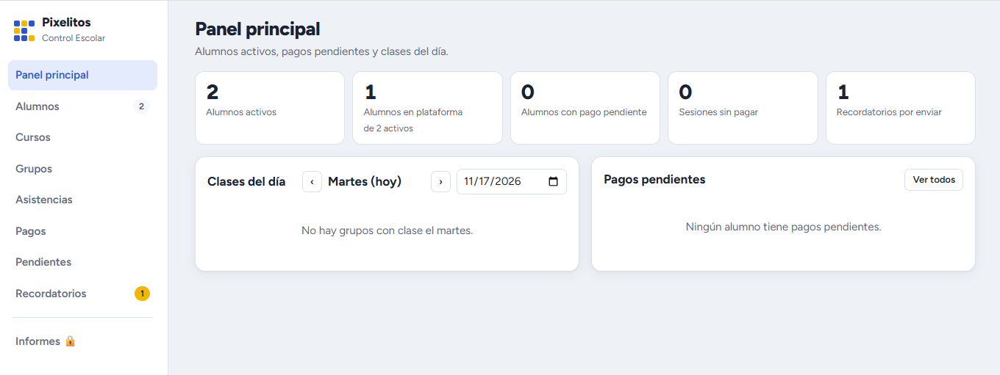
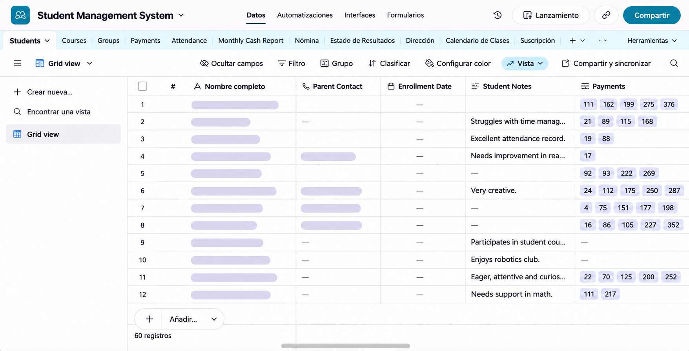
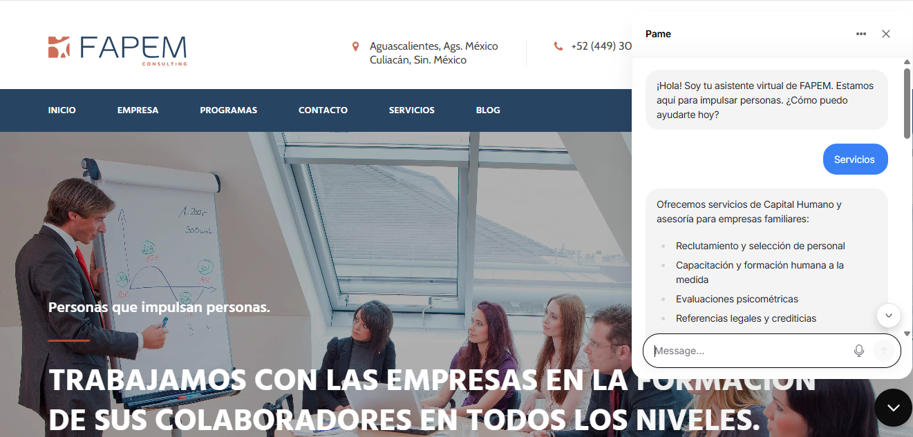
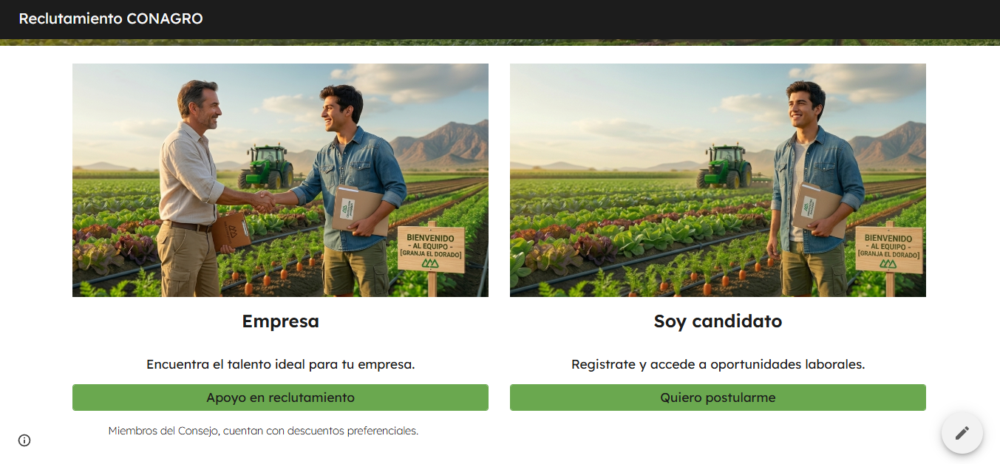

Funditags
Sistema de gestión comercial desarrollado con programación orientada a objetos. Integra la administración de usuarios y roles, inventario y registro de ventas para un negocio de accesorios.
Python · JavaScript · SupabaseEn desarrollo
PORTAFOLIO PERSONAL
Software Developer · AI & Automation
HOLA, SOY JENNIFER
Ingeniera en Mecatrónica enfocada en desarrollo de software, automatización e inteligencia artificial.
Explorar proyectos ↗01 / SOBRE MÍ
Soy Ingeniera en Mecatrónica con interés en el desarrollo de software, la automatización y la inteligencia artificial aplicada. He trabajado en herramientas para la gestión de información y procesos educativos y comerciales, utilizando Python, bases de datos y tecnologías web. Actualmente desarrollo proyectos propios y exploro nuevas formas de integrar inteligencia artificial en soluciones prácticas.
02 / PROYECTOS
Sistema de gestión comercial desarrollado con programación orientada a objetos. Integra la administración de usuarios y roles, inventario y registro de ventas para un negocio de accesorios.
Python · JavaScript · SupabaseEn desarrollo

Plataforma de gestión educativa con módulos administrativos y docentes. Permite gestionar estudiantes, grupos, asistencias y pagos; generar reportes financieros en PDF y Excel, y facilitar el seguimiento de pagos a las familias.
JavaScript · SupabaseEn desarrollo

Sistema de gestión de información administrativa y educativa mediante Airtable. Utiliza bases de datos y automatizaciones para organizar registros y generar reportes mensuales.
Airtable · Database Management · AutomationImplementado

Implementación de un chatbot con inteligencia artificial mediante Chatbase para facilitar la consulta de información en un sitio web empresarial.
Chatbase · Generative AI · ChatbotsImplementado
Ver demostración ↗
Desarrollo de una página web informativa mediante Google Sites, integrando formularios de Google Forms con hojas de cálculo de Google Sheets para recopilar y organizar información.
Google Sites · Google Forms · Google SheetsDesarrollado
Ver demostración ↗03 / HABILIDADES TÉCNICAS
04 / EXPERIENCIA
Docencia en programación y soluciones tecnológicas
Impartición de cursos de programación y tecnologías digitales. Trabajo con herramientas de gestión de información, bases de datos y automatizaciones para apoyar procesos administrativos y educativos.
Mejora Continua
Participación en actividades de mejora continua, análisis de procesos y seguimiento de oportunidades de optimización en un entorno industrial.
Formación tecnológica
Participación en formación tecnológica y enseñanza de herramientas digitales, programación y desarrollo de proyectos con estudiantes.
05 / CONTACTO
¿Tienes un proyecto o una oportunidad en mente? Me interesa colaborar en soluciones digitales, automatización e inteligencia artificial aplicada.